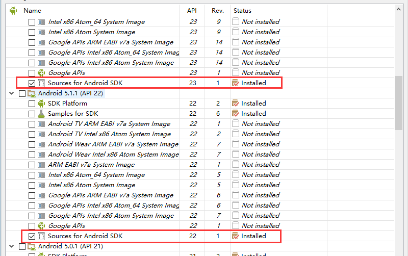
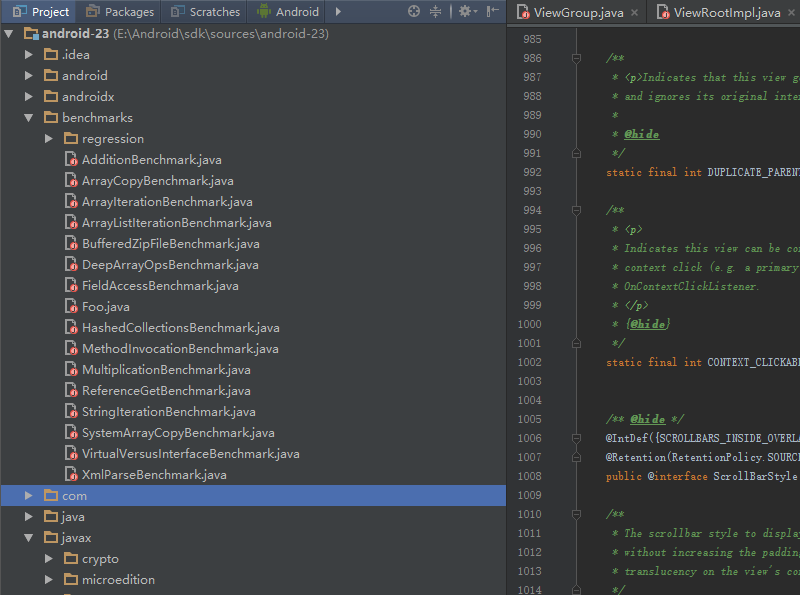
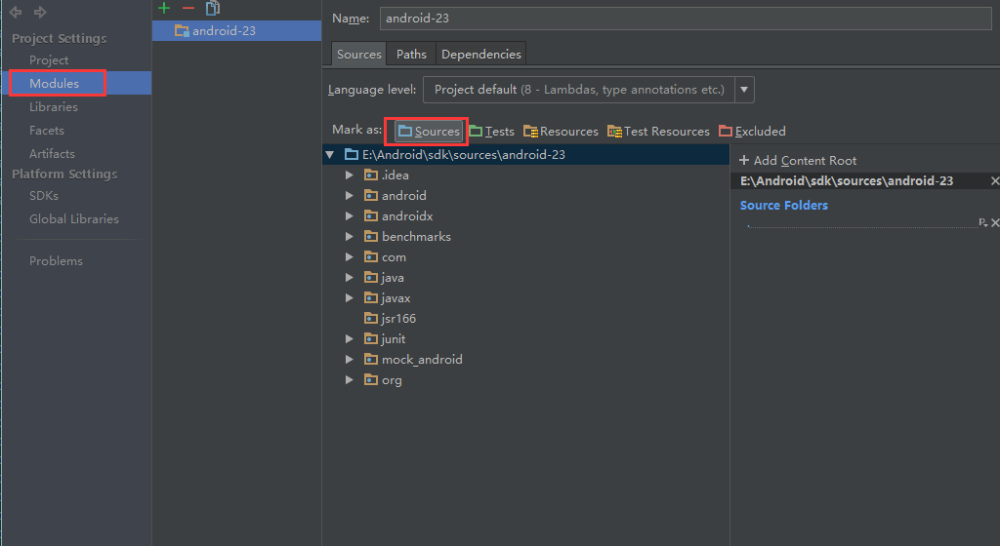
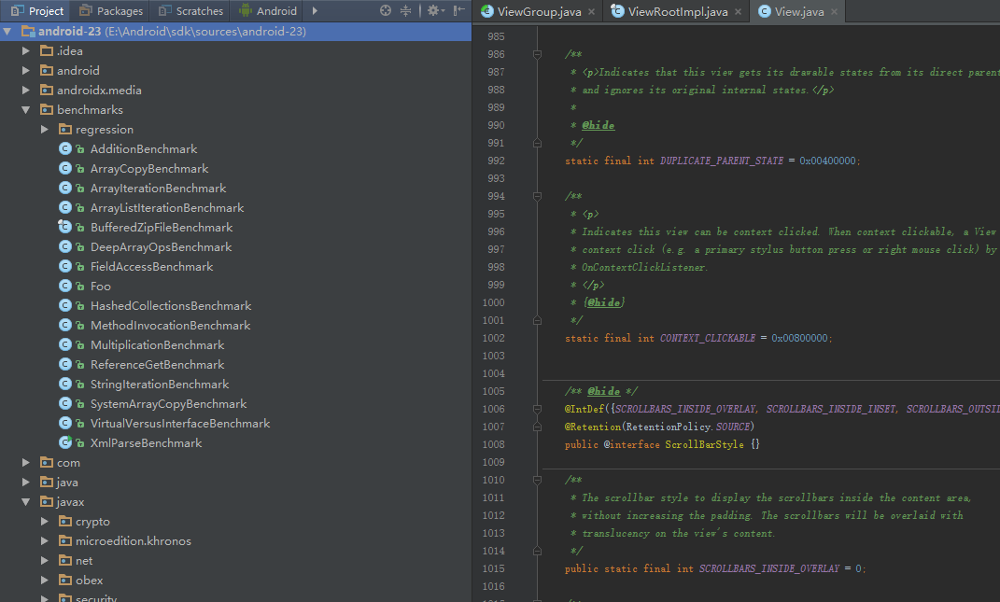

- 准备工作
- 工具 Android Studio
自行翻墙至官网下载,或者androiddevtools,安装过程就不在复述了,网上教程大把. - 源码
源码直接使用SDK Manager打开下载即可示例图.

下载完成之后再SDK目录下sources文件夹里即可找到对应的源码.
- 工具 Android Studio
- 导入阅读
直接将源码根目录作为项目导入,这时由于没有相关配置文件,导入的源码并不能被编译,都是作为普通的文件存在,自然语法高亮,跳转等方便的操作均无法实现.

这时候需要到项目视图窗口,切换到项目视图,然后右键->F4 打开项目设置,修改属性为sources,然后应用,

这时候就可以愉快的查看源码了.
